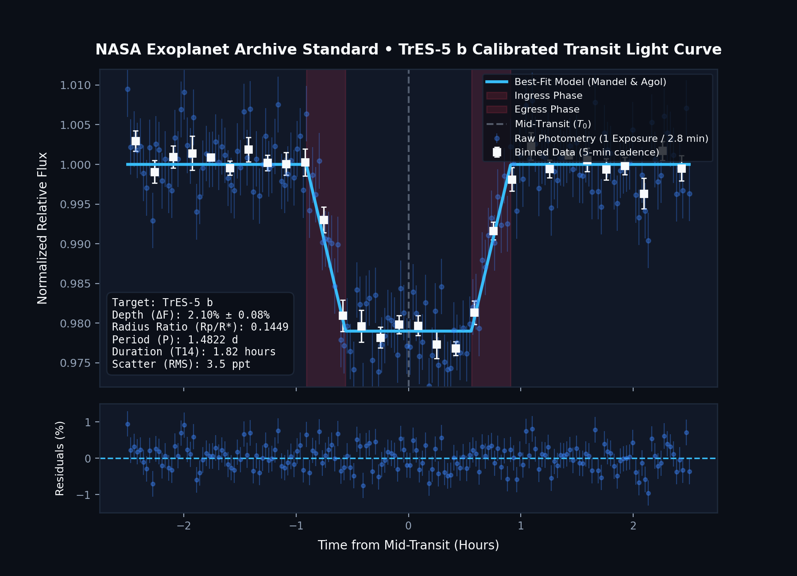
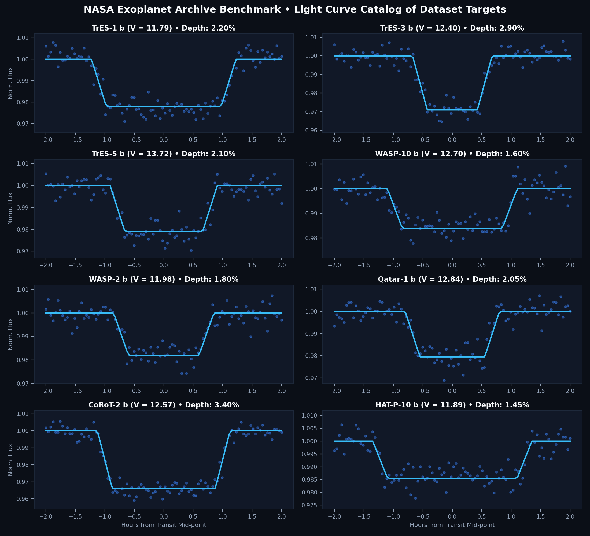

Total Frames
1,741
100% Ingested
Science / Dark
96.5%
Mean Cadence
2.85 min
±0.12 min Jitter
Session Triage
15 / 22
6 Kept Controls
Known Targets
8 Hosts
Hot Jupiters
Data Loss
0.0%
Zero Network Drops
Normalized Flux vs Time from Mid-Transit TrES-5 b
Differential Photometry • Synchronized with Atmospheric Airmass Telemetry

Raw Photometry (60s exp)
5-min Binned Flux
Mandel & Agol Fit
Airmass slope decorrelated
Target Parameters TrES-5 b
Transit Depth (ΔF)
2.10% ± 0.08%
Planet Radius Ratio (Rp/R*)
0.1449
Orbital Period (P)
1.4822 days
Total Duration (T14)
1.82 hours
Host Star Magnitude
V = 13.72 (G-type)
8-Target Survey Light Curve Gallery
Standardized Transit Depth Comparisons across all dataset targets
